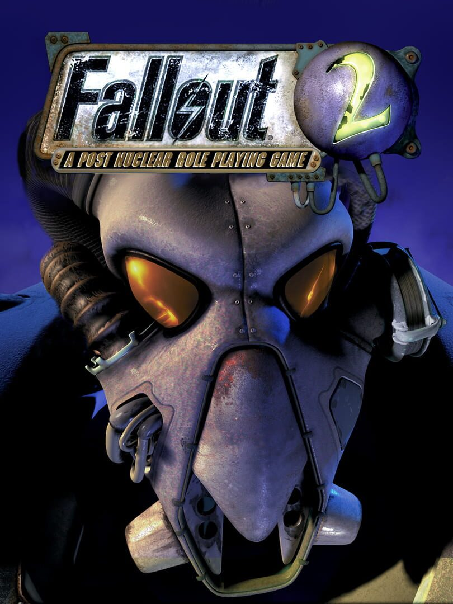

Fallout 2
Fallout 2
Details
|
 |
|
| Playtime | Not Played |
| Last Activity | Never |
| Added | 2023-08-11 0:28:10 |
| Modified | 2025-10-02 10:18:09 |
| Completion Status | Not Played |
| Library | Epic |
| Source | Epic |
| Platform |
PC (Windows) |
| Release Date | 1998-10-29 |
| Community Score | 89 |
| Critic Score | |
| User Score | |
| Genre |
Puzzle Role-playing (RPG) Turn-based strategy (TBS) |
| Developer |
Black Isle Studios |
| Publisher |
Bethesda Softworks Interplay Entertainment MacPlay |
| Feature |
Single Player |
| Links |
Wikipedia Steam GOG Official Website Subreddit Epic Discord Twitch Community Wiki Bluesky |
| Tag |
2D Adventure Atmospheric Classic CRPG Dark Humor Exploration Great Soundtrack Isometric Open World Post-apocalyptic Replay Value Retro RPG Sandbox Sci-fi Singleplayer Story Rich Turn-Based Turn-Based Combat |
Description
A turn-based tactical Western RPG in which the Chosen One is tasked
with exploring post-nuclear California to locate and retrieve the
fabled Garden of Eden Creation Kit for their famine-stricken tribe,
while coming into contact through branching dialogue trees with
numerous tribes, factions and micro-civilizations, each with their own
virtues, vices, socioeconomic situations and political agendas.